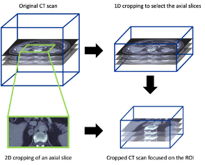

Projects
Playbooks
Case Study Archive
Team
Using deep learning to detect adrenal lesions in CT scans
Augmenting the detection of adrenal incidentalomas in patients’ CT scans.
Info
This is a backup of the case study published here on the NHS England Transformation Directorate website.
Case Study
Many cases of adrenal lesions, known as adrenal incidentalomas, are discovered incidentally on CT scans performed for other medical conditions. These lesions can be malignant, and so early detection is crucial for patients to receive the correct treatment and allow the public health system to target resources efficiently. Traditionally, the detection of adrenal lesions on CT scans relies on manual analysis by radiologists, which can be time-consuming and unsystematic.
The challenge
Can applying AI and deep learning augment the detection of adrenal incidentalomas in patients’ CT scans?
Overview
Autopsy studies reveal a statistic that as many as 6% of all natural deaths displayed a previously undiagnosed adrenal lesion. Such lesions are also found incidentally (and are therefore referred to as adrenal incidentalomas) in approximately 1% of chest or abdominal CT scans. These lesions affect approximately 50,000 patients annually in the United Kingdom, with significant impact on patient health, including 10% to 15% of cases of excess hormone production, or 1% to 5% of cases of cancer.
It is a significant challenge for the health care system to, in a standardised way, promptly reassure the majority of patients, who have no abnormalities, whilst effectively focusing on those with hormone excess or cancers. Issues include over-reporting (false positives), causing patient anxiety and unnecessary investigations (wasting resources of the health care system), and under-reporting (missed cases), with potentially fatal outcomes. This has major impacts on patient well-being and clinical outcomes, as well as cost-effectiveness.
The main aim of this study was to examine whether or not using Artificial Intelligence (AI) can improve the detection of adrenal incidentalomas in CT scans. Previous studies have suggested that AI has the potential in distinguishing different types of adrenal lesions. In this study, we specifically focused on detecting the presence of any type of adrenal lesion in CT scans. To demonstrate this proof-of-concept, we investigated the potential of applying deep learning techniques to predict the likelihood of a CT abdominal scan presenting as ‘normal’ or ‘abnormal’, the latter implying the presence of an adrenal lesion.
What we did
Using the data provided by University Hospitals of North Midlands NHS Trust, we developed a 2.5D deep learning model to perform detection of adrenal lesions in patients’ CT scans (binary classification of normal and abnormal adrenal glands). The entire dataset is completely anonymised and does not contain any personal or identifiable information of patients. The only clinical information taken were the binary labels for adrenal lesions (‘normal’ or ‘abnormal’) for the pseudo-labelled patients and their CT scans.
2.5D images
A 2.5D image is a type of image that lies between a typical 2D and 3D image. It can retain some level of 3D features and can potentially be processed as a 2D image by deep learning models. A greyscale 2D image is two dimensional with a size of x × y, where x and y are the length and width of the 2D image. For a greyscale 3D image (e.g., a CT scan), with a size of x × y × n, it can be considered as a combination of a stack of n number of greyscale 2D images. In other words, a CT scan is a 3D image consisting of multiple 2D images layered on top of each other. The size of a 2.5D image is x × y × 3, and it represents a stack of 3 greyscale 2D images.
Typically, an extra dimension of pixel information is required to record and display 2D colour images in electronic systems, such as the three RGB (red, green, and blue) colour channels. This increases the size of a 2D image to x × y × 3, where the 3 represents the three RGB channels. Many commonly used families of 2D deep learning algorithms (e.g., VGG, ResNet, and EfficientNet) have taken colour images into account and have the ability to process images with the extra three channels. Taking the advantage of the fact that pixel volumes have the same size between 2D colour images and 2.5D images, converting our 3 dimensional CT scan data to 2.5D images can allow us to apply 2D deep learning models on our images.
Why using a 2.5D model
Due to the intrinsic nature of CT scans (e.g., a high operating cost, limited number of available CT scanners, and patients’ exposure to radiation), the acquisition of a sufficient amount of CT scans for 3D deep learning models training is challenging. In many cases, the performance of 3D deep learning models is limited by the small and non-diversified dataset. Training, validating, and testing the model with a small dataset can lead to many disadvantages, for example, a high risk of overfitting the training-validation set (low prediction ability on an unseen test set), and evaluating the model performance within the ambit of a small number statistic (underrepresented test set results in the test accuracy much lower/higher than the underlying model performance).
To overcome some of the disadvantage of training a 3D deep learning model, we took a 2.5D deep learning model approach in this case study. Training the model using 2.5D images enables our deep learning model to still learn from the 3D features of the CT scans, while increasing the number of training and testing data points in this study. Moreover, we can apply 2D deep learning models to the set of 2.5D images, which allow us to apply transfer learning to train our own model further based on the knowledge learned by other deep learning applications (e.g., ImageNet, and the NHS AI Lab’s National COVID-19 Chest Imaging Database).
Classification of 3D CT scans
To perform the binary classification on the overal CT scans (instead of a single 2.5D image), the classification results from each individual 2.5D image that make up a CT scan are considered.
To connect the classification prediction results from the 2.5D images to the CT scan, we introduce an operating value for our model to provide the final classification. The CT scans are classified as normal if the number of abnormal 2.5D images is lower than the threshold operating value. For example, if the operating value is defined to be X, a CT scan will be considered as normal if there are more than X of its 2.5D images classified as normal by our model.
Processing the CT scans to focus on the adrenal glands
To prepare the CT scans for this case study (region of interest focus on the adrenal grands), we also developed a manual 3D cropping tool for CT scans. This cropping applied to all three dimensions, including a 1D cropping to select the appropriate axial slices and a 2D cropping on each axial slice. The final cropped 3D image covered the whole adrenal gland on both sides with some extra margin on each side.

Outcomes and lessons learned
The resulting code, released as open source on our Github (available to anyone to re-use), enables users to:
- Process CT scans to focus on the region of interest (e.g., adrenal glands),
- Transform 3D CT scans to sets of 2.5D images,
- Train a deep learning model with the 2.5D images for adrenal lesion detection (classification: normal vs. abnormal),
- Evaluate the trained deep learning model on an independent test set.
This proof-of-concept model demonstrates the ability and potential of applying such deep learning techniques in the detection of adrenal lesions on CT scans. It also shows an opportunity to detect adrenal incidentalomas using deep learning.
An AI solution will allow for lesions to be detected more systematically and flagged for the reporting radiologist. In addition to enhanced patient safety, through minimising missed cases and variability in reporting, this is likely to be a cost-effective solution, saving clinician time. – Professor Fahmy Hanna, Professor of Endocrinology and Metabolism, Keele Medical School and University Hospitals of North Midlands NHS Trust
Who was involved?
This project was a collaboration between the NHS AI Lab Skunkworks, within the Transformation Directorate at NHS England and NHS Improvement, and University Hospitals of North Midlands NHS Trust.